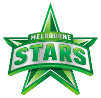
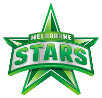
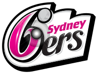
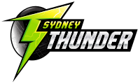
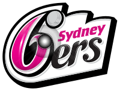
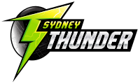

La Big Bash League de Australia se estableció para aprovechar este popular formato. Big Bash League es la liga T20 anual de Australia patrocinada por la famosa cadena de alimentos KFC. La primera edición de la liga se jugó en el año 2011.


 
   
 